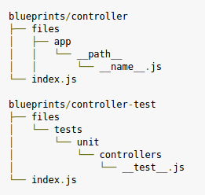

¿Qué es un Blueprint?
En arquitectura un Blueprint es el conjunto de planos en los que se especifica la estructura a construir
¿Y en el desarrollo de sofware?
Son generadores de snippets con las que puedes una entidad
Estructura
Los Blueprint se han de crear en pares, uno para la entidad en sí y otro para el test correspondiente
Mini Demo
Desventajas
Van muy ligados a la arquitectura de tu aplicación => Poco Reusable
Tienen sentido sólo para casos génericos
Ventajas
Permiten automatizar la creación de entidades con tienen un procedimiento estandarizado
Agilizan el desarrollo
Son simples de implementar